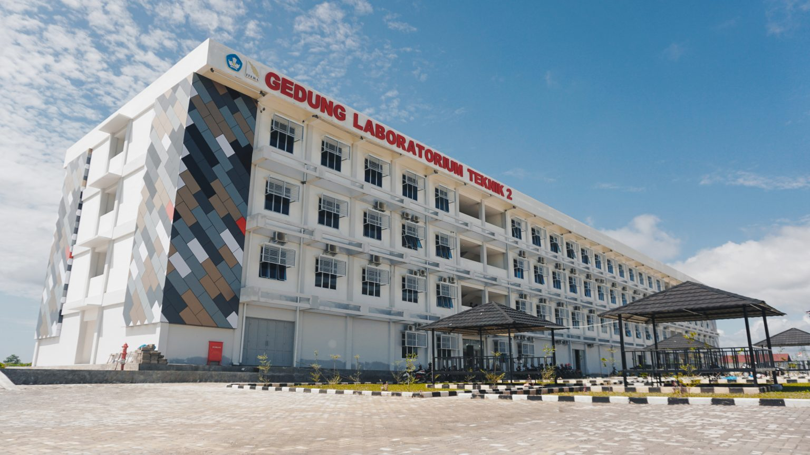

Halaman web ini dibuat untuk memudahkan pendataan mahasiswa yang
menuntut pendidikan di kampus Institut Teknologi Sumatera. Pada web
ini disediakan tiga halaman, yaitu halaman home ini sendiri, halaman
formulir pendataan, dan halaman yang menyajikan tabel data mahasiswa
yang telah diinputkan sejauh ini.

Gedung Laboratorium Teknik 1 ITERA